Yo
- Ville et province de Sicile
- Deuxième ville la plus grande de Sicile derrière Palerme
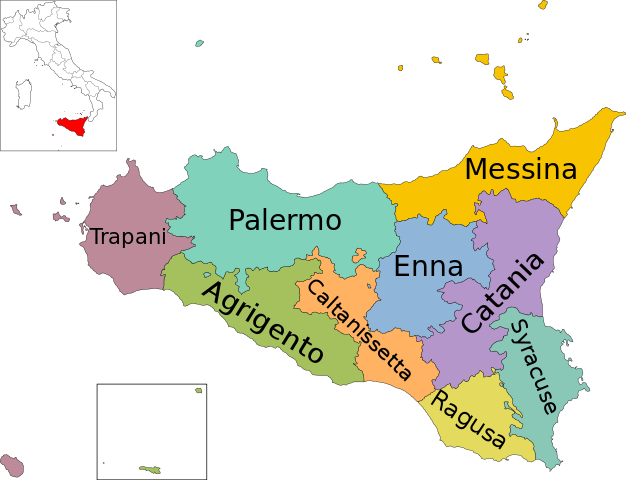
Grandeur
- 315 000 habitants
(Genève en a 200 000)
Dans l'ombre de l'Etna…
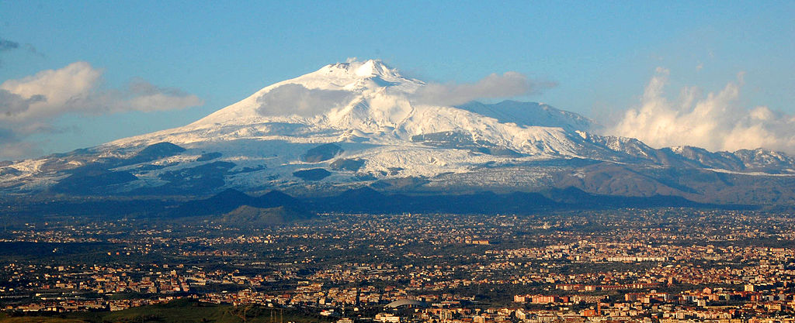
- Des tremblements de terre ont detruit la ville en 1169 et en 1693. (reconstruction -> architecture baroque)
- Grâce aux cendres volcaniques, la terre est fertile -> bonne industrie du vin
- Dernière éruption: 19 avril 2017
Deux rivières souterraines
- En 1693, deux rivières (Amenano et Lognina) sont enterrées par la lave.
- Nombreuses églises ont encore accès à cette partie plus «basse» de la ville.
- Il est possible de visiter la partie qui a survécu.
Climat
- Étés longs et chauds (30°C en juin)
- Hivers doux
À visiter…
Fontana dell'Elefante
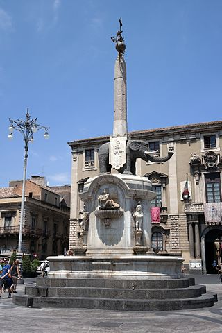
L'Etna
Piazza Duomo
Place baroque
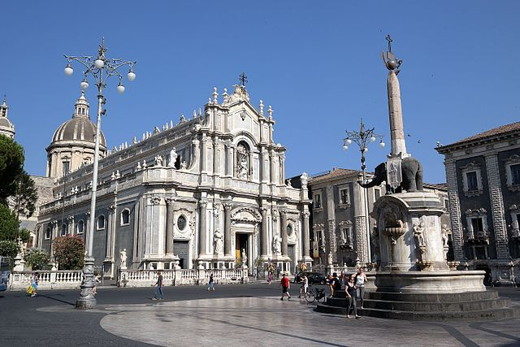
La Pescheria
Marché de poisson
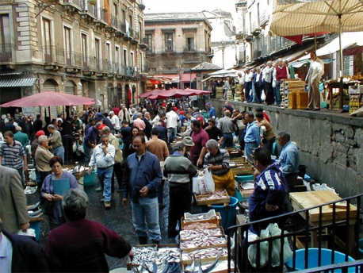
San Giovanni li Cuti
Plage «noire»
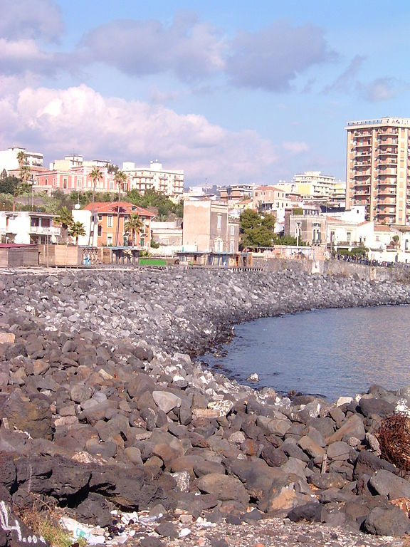
Castello Ursino
Château du XIIIème siècle
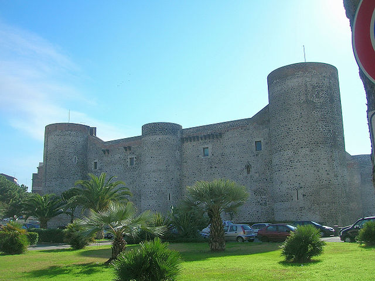
Via dei Crociferi
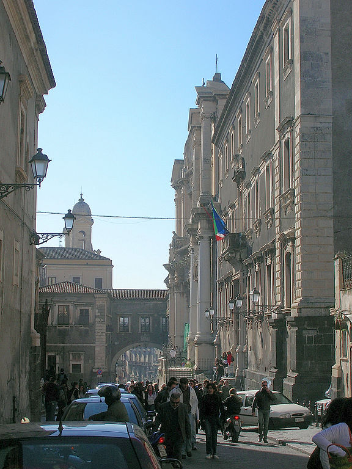
Basilica Cattedrale Sant'Agata
Basilique baroque

Théâtre Romain
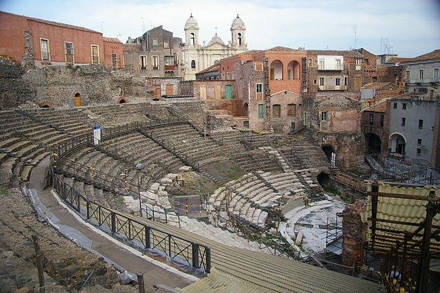
Monastero dei Benedettini
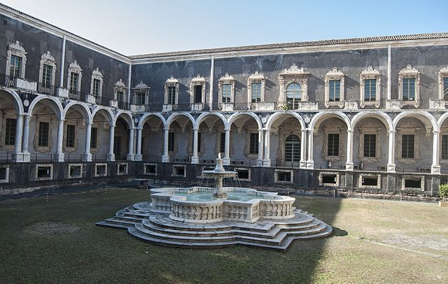
À manger…
Ghiotta di Pesce Spada
Filet d'Espadon avec sauce tomate, céleri, oignon, olives et câpres
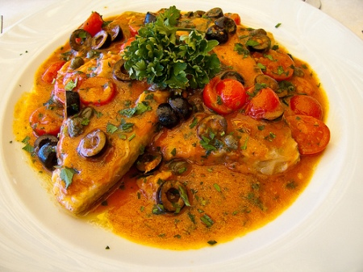
Pasta alla Norma
Pâtes avec aubergines, tomates, basilic et ricotta
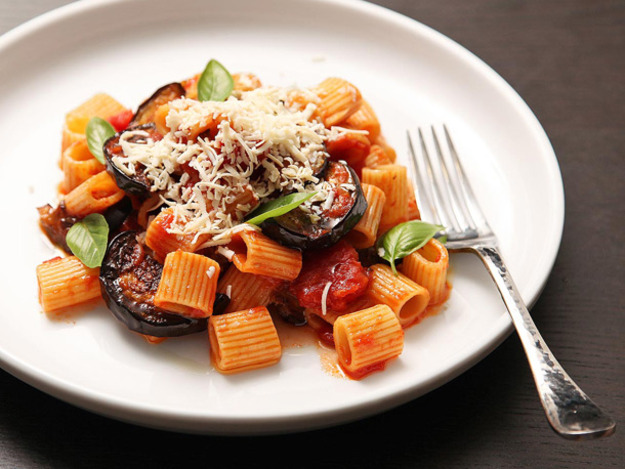
Cannoli con Cioccolato
Pâte feuilletée avec crème, chocolat et vin blanc
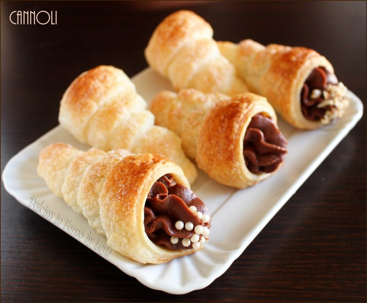
Seins d'Agathe
Biscuit farci de crème, recouvert de glaçage blanc et d'une cerise
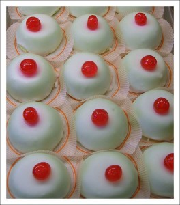